1. Introduction and Goals
This project is based on a decentralized route management system based on the SOLID specifications.
-
Project developed using the React and SOLID framework
1.1. Requirements Overview
-
The system will be based on a decentralized architecture in which the data is separated from the application
-
Users can store the routes on their own pods.
-
Users can view the routes on a map.
-
The application will allow the user to share photos, videos or other files with other friends.
-
A user can get notifications when a friend wants to share a route with him.
-
Users may have groups of friends with whom they may want to share a route.
-
It should be possible to see the routes loaded by users who are using a different app, so that interoperability with other route management systems should be taken into account.
1.2. Quality Goals
The main goals of the sistem are:
| Priority | Goal | Description |
|---|---|---|
1 |
Privacity |
To secure the user data, to make then able to manage their own data as they wish. |
2 |
Usability |
To make able to non-technical persons or those related to the technological field may understand the use of the system |
3 |
Funcionality |
So that a good use of the system can be made respecting the two superior objectives, without any problem. |
4 |
Efficiency |
The system should make able to share and upload your routes in the lowest possible time. |
1.3. Stakeholders
| Role/Name | Contact | Expectations |
|---|---|---|
Users |
Use the app to record their routes |
To safe their data safely, and to be owner of their data, using the app to record their routes |
Inrupt |
Company who are gonna try the app, to evaluate it |
Obtain a decentralized and secure route application using SOLID specifications built by students. |
Team Developer |
Team who will create the app |
Create a good application at the same time that they learn new technologies. |
Teachers |
They will mark our project and the way we have presented the architecture of the project. |
They will need to be able to understand our project functioning and architecture. They will be expecting a fully functional proyect that will make the university proud of their students. |
Maintenance Team |
Team that will maintein the app if its successful |
A clean, and eficient code for the application |
2. Architecture Constraints
2.1. Organizational constraints
| Constraints | Explanation |
|---|---|
Version control |
Our team was not used to use this kind of tecnology, so we had to learn everything almost from zero. |
New Team |
The team is made up by 6 people that didn’t know each others before starting this proyect. |
Time |
The project must be developped in a too short period of time, taking on account that it is being built up at the same time we are having other projects.This makes it difficult to carry out some good ideas. |
Documentation |
Arc42 model and asciidoc |
2.2. Technical Constraints
| Constraints | Explanation |
|---|---|
SOLID |
The descentralized routes must be decentralized, based on the solid specifications. |
Browser |
The application must be compatible with most browsers (Chrome, Firefox, etc.) |
Arc42 |
The documentation must use arc42, that is written with the .adoc extension. |
React |
The system must be developed using the React framework. |
Open Source |
The application must be developed with open source. |
2.3. Conventions
| Constraints | Explanation |
|---|---|
Language |
The team will make an effort to make everything in English. As the project is openned to international audience, this will help to its understanding. |
Cost |
As this project is developed by Uniovi students, free software must be used. |
3. System Scope and Context
The project we are going to develop consists of a decentralized route management system.
However we have to focus on permissions. A user cannot see the routes of another user if he has not received permission, that is, if they have not shared the route with him.
The most important point of our system is decentralization. We want only the users who create the routes to have access to them, so that no external user can access.
To archive this goal we will use SOLID. SOLID is a project that consist of a descentralized website. With this we intend that users can store their routes in PODs. A POD is a unique profile of each user, which allows to store information on the web about it. We will use POD to store the route of each user.
Here we describe the programs that we had decide to use.
| Name | Type of software | Reason |
|---|---|---|
JavaScript |
Programming language |
For applications with Solid software |
React |
JavaScript framework |
Implementation of our project |
Solid |
Data management software |
Use required by the project manager |
Asciidoctor |
Text processor |
Text processor to generate asciidoc documents |
3.1. Business Context
The communicated parties are the stakeholders that can be anyone who wants to have a conversation with this app. There are also the PODs of each of the users that will be used to save the data.
The interface will receive the path of the user using the application and save it to the user’s PODS. Communication with Solid and the POD will be received in the application using the Javascript React framework.
In this system the information exchanged will be only the one that the user in question wants to share. information of the routeas well as personal data would be kept in the user’s POD Apart from this, users will also be able to share images, data routes, videos, and other type of files like points on the route.
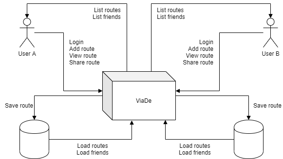
3.2. Technical Context
The implementation of the application has been carried out with react. It has a user interface in which the user will be able to save his routes and in addition to that will be able to share images, routes… with other users that he decides.
As we have said before, we will use the so-called PODs provided by SOLID to connect to the server of the same, and through it, save routes of each users
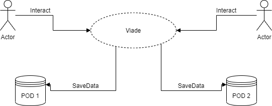
4. Solution Strategy
4.1. Introduction
In this part you will find the summary of fundamental decisions and strategies
4.2. Decisions
JavaScript |
JS is the best choice for the application. |
Node, React js |
Node js is the back-end of the project and React is the front-end. |
Solid |
It would be easier if we use it to have a decentralized application, using pod’s. |
HTML, CSS |
For de view of the application. |
Google API |
Google API Directions is the best idea we have for the routes. |
MVC |
It would be easier if we use de ModelViewController, the design pattern, so we have the code divides in three interconnected elements. |
Usable |
The application must be usable. We will achieve this by making people that aren’t studying this degree testing the application. ======= |
The application must be usable, |
Testing |
Meeting once a week |
Comunication is the base of the project so we meet one a week to solve de problems, and discuss new ideas. |
5. Building Block View
The building block view shows the static decomposition of our system into building blocks. Each level is more specific than the previous one.
5.1. Level 1
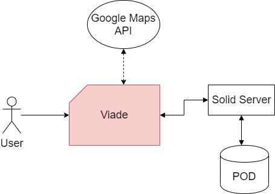
| Name | Responsability |
|---|---|
Viade Application |
It allows users to add and store information and media about routes, and share with their friends. |
Solid Server |
It provides users information and their PODs, that store the information. |
Google Maps API |
It provides the different services to use a map in our application. |
5.2. Level 2
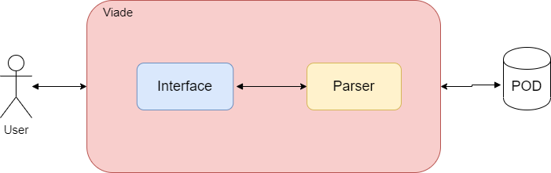
| Name | Responsability |
|---|---|
Interface |
Generate the code to show the page using React. |
Parser |
Transform the object Route in order to managment our app. |
5.3. Level 3
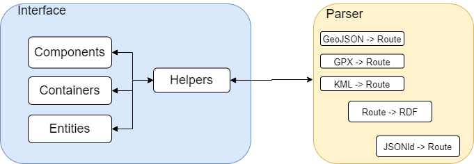
| Name | Responsability |
|---|---|
Components |
Parts of the visual architecture of the app. |
Containers |
It contains all the visual information and you can interactive with them. |
Entities |
The basic data model used in the app. |
Helpers |
Services that manage the main methods. |
GeoJSON to Route |
We transform GeoJSON into an object Route to use in our app. |
GPX to Route |
We transform GPX into an object Route to use in our app. |
KML to Route |
We transform KML into an object RoutE to use in our app. |
Route to RDF |
We transform de object Route into RDF to be able to upload it to a Solid Pod. |
JSONld to Route |
We download JSONld object and transform it into object Route to use in our app. |
6. Runtime View
6.1. Log in
-
Shows the login of the application and how the whole process works.
-
A user enters their credentials in the login interface. That interface then sends the request to the authenticator, which in turn validates the data on the SOLID server. From here, two situations can occur:
-
The first is that the session is correct, which redirects you to the main page of the application.
-
The second option is that the login is invalid, which shows you the error message.
-
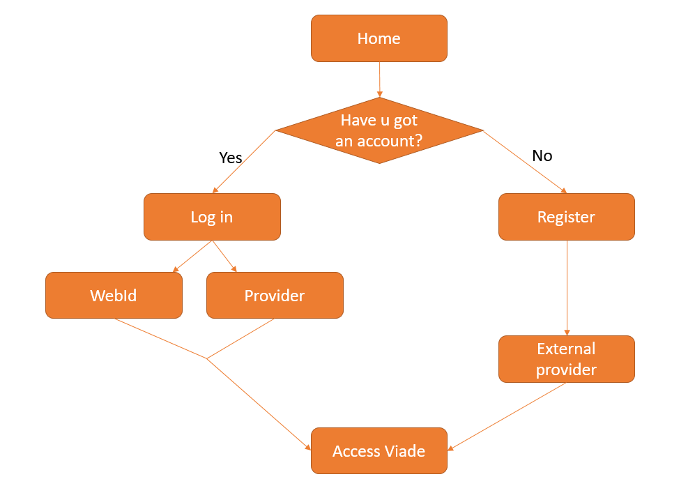
6.2. Create a new route
-
Shows how a route is created in the application.
-
The user wants to upload a route. In the navigation bar there are two options to upload a route. One to upload a file and another to create your route from a map. If the user wants to upload the file, they only have to indicate the name and description of the file, optionally they can upload photos or videos. On the other hand, if you want to create your own route, the user must indicate the name and mark on a map the points that will form the route, apart from the optional data, such as the description. Once the necessary data has been added, the Create button will be pressed to verify that it has valid data and the route is loaded into the POD. From here, two situations can occur:
-
That the route has been saved successfully and you receive a message that it was saved successfully.
-
Or that the path could not be saved and you received an error message.
-
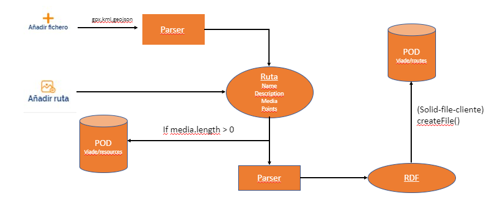
6.3. Share a route
-
Shows how a route is shared in the app.
-
The user wants to share an existing route on their POD. For this you must select the route which you want to share and with whom you want to share it. Once everything is selected, a notification will be sent to the user with whom you want to share it. From here, two situations can occur:
-
The user accepts the notification, which will cause the shared route to be uploaded to their POD.
-
Or that you don’t want to accept the shared route.
-
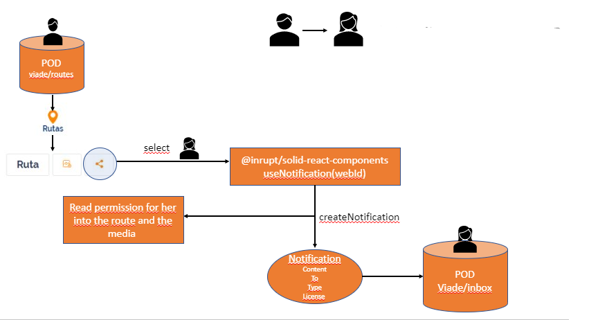 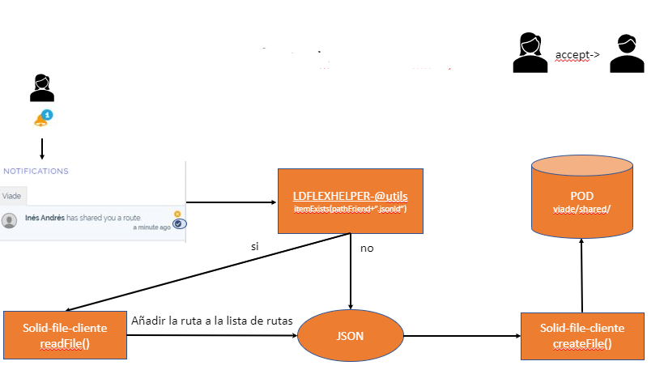
7. Deployment View
To run Viade_es5c routes you just need your computer and a navigator.
7.1. Creating a route
This is a easy demonstration of how viade works in a deeper level when you creates a route, a breef visualization of the infraestructure under the application.
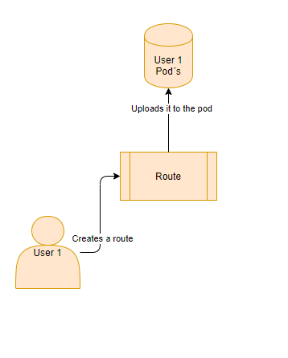
Now we include a secuence diagram to have a deeper knowledge about how viade manage the creation of a route.
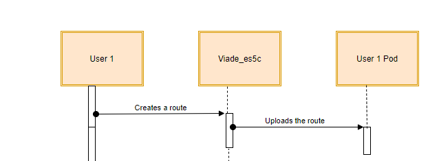
7.2. Sharing a route
As another example of the infraestructure of viade, we include another demostration of how it works.
This time we will show how it works sharing a file or route with a friend. As before the first image shows more in a more visual way how is the inside infraestructure.
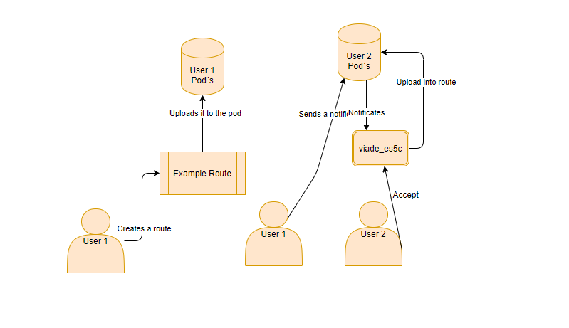
Now we shows a secuence, of which steps the infraestructure follows to share the file from one pod to the other one.
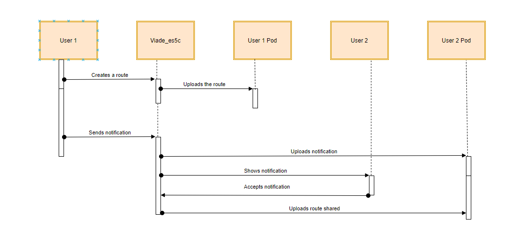
8. Cross-cutting Concepts
This section describes the approaches relevants in multiple parts of our system.
8.1. Concepts Mind Map
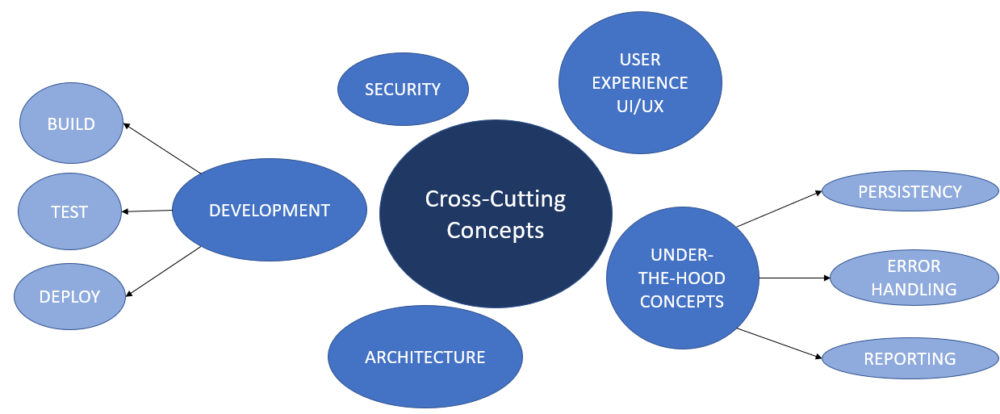
8.2. Concepts Detailed
8.2.1. Domain concepts
In the application we wil have this domain concepts:
-
Route: the route the client want to share or save.
-
POD: where the data is going to be store.
-
Client: use the application to save or share route,image,etc…
8.2.2. UI/UX
The user interface is written with React, it might be in English, and is the design of the app. For user experience is very important. We want the user to use it easily, and comfortably, without any problem.
As we said before, we want the user to be comfortable, so we internationalized everything in it, making it a plurilingual project.
8.2.3. Patterns
The decentralized routes management system follows de MVC (ModelViewController) architecture pattern. Also, we use some design patterns inside it.
8.2.4. "Under-the-hood" Concepts
-
Persistency: data is always persistent in every user’s pod. We’ll storage everything in it using liked data.
-
Exception and error handling: The main error not controlled by the app is having a not stable internet connection as it could damage the app’s correct functioning.
-
Reporting: we will use a system to compute changes and code coverall (maybe Travis).
8.2.5. Development concepts
-
Build: to build our app we will use NodeJS webpack
-
Test: we will use some frameworks to try our app. Some of them could be mocha or cucumber.js
-
Deploy: Our app will be deployed using gitHub pages. For
8.2.6. Safety and security concepts
-
Safety: The application won’t be open to vulnerabilities. Out intention was to make our app as safety as we can in the short period of time we had.
-
Security: All will be save in the POD, so the user could be the only one who can get it, and the application will be descentralized. To ensure the user to have multiple POD service, we alow him/her to login in our app using solid or inrupt pods provider
9. Design Decisions
9.1. Design Decisions Detailed
In this document we will show the decisions regarding the design that we have found most accurate and which directly influence our project.
As the project progresses, it is possible that the tools we initially decide to use change, to facilitate the way we develop our application.
9.1.1. Front End
For the design of the user interface and give the most similar aspect possible to the applications with which we handle daily we have decided to use HTML, CSS in addition to JQUERY. Our decision is given so that the user can feel more comfortable having an appearance similar to other applications with which he is more familiar. Using React was not a team decision, it was a requirement. Even so, some of the advantages that React offers us are increase application performance, easy to integrate with frameworks such as Meteor, Angular, etc.
9.1.2. Back End
For the system functionality and data processing part, we will focus on using javascript with nodeJS. Since it is an environment that we know, easy to use and above all because in a project of these characteristics we can take advantage of the advantages it offers, such as scalability and consume data in real time.
The tests will be carried out with Jest, a framework for testing javascript that focuses on simplicity.
9.1.3. Routes storage
In order to save our users' routes, we were restricted from using SOLID. The window that you have on other databases is that it helps us to save the data without having to have a main database and that helps to improve the privacy of users, storing individual routes in PODS. In addition, SOLID with its basic principles of OO programming and design helps to develop quality and easily testable software.
9.1.4. MVC
Our application follows the MVC pattern (controller view model). This pattern is based on the ideas of code reuse and layer separation, features that facilitate development and maintenance tasks.
9.1.5. Continuous Integration
We are using Travis CI for running the tests and checking the correct build of our app, Codecov for improve our code review workflow and quality. Also Code Quality to improve our skills when programming a better and more robust code.
9.1.6. Google Maps API
We decided to use the Google Map API due to the many advantages it provided us, such as examples of carrying out tasks similar to those proposed in the subject and the ease of implementation and work with it, apart from many other advantages such as It can be reliability, scalability and flexibility.
9.1.7. LDFlex
I use the LDFlex given the simplicity with which it allows us to make queries about a POD to extract the data we need to use it in our application.
9.1.8. JQuery
Using JQuery, since it is a comfortable and effective way to manage the DOM tree without having to use template engines. Furthermore, the working group has experience in its use.
9.1.9. solid-file-client
We are using solid-file-client that is a library for managing Solid files and folders.
9.1.10. solid-auth-client
We are using solid-auth-client that is a browser library for performing authenticated requests to Solid pods.
9.1.11. enzyme
We are using enzyme that is a JavaScript Testing utility for React that makes it easier to assert, manipulate, and traverse your React Components output.
9.1.12. tripledoc
We are using tripledoc that is a library for easy manipulation on RDF. It has two primary data structures that are TripleDocument, representing an RDF Document and TripleSubject. a node in the RDF graph that can be queried for Triples in which it occurs as the Subject. Their functions are createDocument, createDocumentInContaint, fetchDocument. We use tripledoc 4.3.0.
9.1.13. rdf-namespace
We are using rdf-namespace because it generate automatically TypeScript files containing short aliases to common RDF namespaces.
9.1.14. Documentation
Regarding the documentation, we will do it in asciidoctor, since it is open source and uses a simple syntax and includes very useful functionalities such as being able to reference a code section of another file.
10. Quality Requirements
This section contains all quality requirements as quality tree with scenarios.
As quality requirements will have a lot of influence on architectural decisions, we should know what is important for every system’s stakeholder.
10.1. Quality Tree
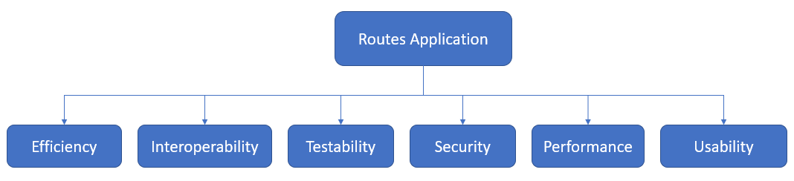
10.2. Quality Scenarios
In this point, we’ll talk about the most important points:
-
Reliability (HIGH): this is the most important point in this project. The app must be mostly all the time working. Even if a Pod provider fails to work (solid for example) the user is able to login with other provider, so the app will continue running.
-
Performance (HIGH): users must have the better experience possible. Loading time is improved how much we could in the short period of time we had to develop this project.
-
Security (MEDIUM): the app must be secure to use. One of the reasons Solid is chosen is because your data is always secure
-
Modificability (MEDIUM): this quality scenario is very important for us, just because you don’t know who will continue with this project in the future, so it has to be easy to modify.
-
Testability (HIGH): We are using Codecov for code coverage, ensuring it at least reaches 60% of code coverage.
-
Usability (HIGH): If possible we want to add images to the routes, giving the users a better experience with our app.
-
Availability (HIGH): This route system will be available to anyone who has a Solid account and a Solid Pod to store user information. Also, the user could have an Inrupt Pod
11. Risks and Technical Debts
In this section of the documentation we will show you some of the problems we have faced during the development of the project. Some of the problems will be encountered as the project progresses, these being new for us and therefore unknown at the moment.
This is the list with each and every one of the problems that we have encountered with the realization of this project, ordered with priority.
| Problem | Reason | Solutions |
|---|---|---|
Poor JavaScript |
More comfort with other environments. |
Developers should refresh their knowledge of JavaScript. |
Never use React |
The developers have never used React |
Developers should be informed about the operation of React, as well as the syntax and development methodology it uses. |
Little knowledge of Solid |
Solid is a totally new issue for us. Zero experience with it. |
Developers should look for information on how to work with SOLID and how it works. |
Little knowledge about LDFlex |
No knowledge |
Search for detailed information about how to use it and how to work with it. Search for examples to understand their use. |
Github |
Fusion of all branches. Conflicts. |
Developers should exercise caution when making changes to the develop and master branches |
Teamwork |
The developers have never cordinated to work with such a big group |
The developers will have to talk and coordinate so that the problems that may arise are as minimal as possible. |
Null experience |
No experience with many libraries and work tools that could be useful to us. |
Search for information about each and every one of the tools necessary to carry out the project and which could help us, whether they are libraries or frameworks or another type of element that can contribute. |
12. Glossary
About arc42
arc42, the Template for documentation of software and system architecture.
By Dr. Gernot Starke, Dr. Peter Hruschka and contributors.
Template Revision: 7.0 EN (based on asciidoc), January 2017
© We acknowledge that this document uses material from the arc 42 architecture template, http://www.arc42.de. Created by Dr. Peter Hruschka & Dr. Gernot Starke.